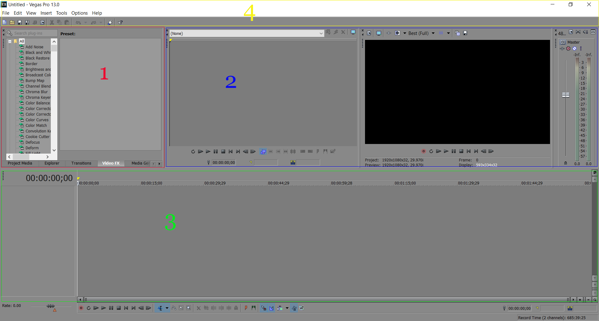

Workspaces
Workspaces are where all editing will take place. Labeled below are some programming softwares and some of the feature available on the workspace. Click on parts of the image to see the functions being used. Note that section 4 of the workspace will lead you back to the basics page, you can view the functions there.
Sony Vegas 13
- 1. Presets
The presets panel is where you can find plugins, select effects, transitions or import media. Most video editors provide multiple ways you can import media, and through the presets panel is one of the options. You'll notice towards the bottom, there are some tabs labeled Project Media, Explorer, Transitions, Video FX, and Media Generators. We'll go into breif detail of what each of them do.
- 2. Video panel
If you click on the image section you'll notice the left side of the video area does not have to be used, though it acts as a second video panel if needed.
- 3. Timeline
After dragging video or audio into the timeline, you can then add effects, or move things around as you desire. If you click on section 3 of the image, you'll see multiple video and audio tracks being used on the timeline. The purple, wavelength like tracks represent audio while everything else represents a video or image. Large projects will usually look similar to what you see in this image.
- 4. Toolbar
The toolbar offers a variety of settings that can adjust your video. Rendering options can be found under the file tab and it's how you can export videos and images. You can find tools such as spliting and unlinking which can cut a clip apart and remove audio from video respectively.